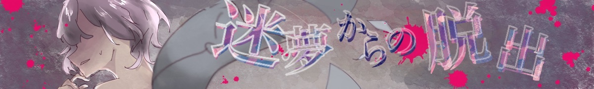

STAGE：1潜水艦からの脱出
ここはどこ？目を覚ますと暗く狭い潜水艦の中にいた。備えられている窓から外を覗くと色んな種類の魚が泳いでいて外は深い海の中であることが分かる。
薄暗い潜水艦には人が見当たらず、すごく心細い。詮索すると、この潜水艦の情報が載ってある資料を見つけた。潜水艦の型番、艦長の名前、その他色んな情報が載っている。
出入り口を見つけ開けようとするとパスワードが必要であることがわかる。
困ったときは、ヒントがある。なるべく見ないようにゲームを進めていこう。
STAGE：2人魚
「映夢。」どこからか声がする。「ここから出たいですか？」と声の主は続けてそう言った。「出たい！ここから出して！」と映夢が答えると、パキンと大きな音がした。ロックが外れ、映夢の体は海に放り出される。
だからって、水中では息ができない！焦る映夢の耳元で「足元をよくみて」と何者かが囁いた。映夢は恐る恐る目を開けた。なんと尾ひれがついている。「人魚？」と呟いた時、不思議と息ができることに気がついた。
隣にはチョウチンアンコウがいた。「陸を目指しましょう」というその声は、先ほどの声と同じだ。どこが陸か海底かなんて、この暗闇ではわからない。途方に暮れて彷徨っていると、光るクラゲが何やら集まって話しあっている。
クラゲが頭を悩ませているとある謎。「それを解いてくれるなら、光の道となって陸への方向を教えてやる」とクラゲは言った。映夢は海底に綴られた謎の数式に近づいた。
STAGE：2キーワードを入力
STAGE：3祭囃子
陸に近づくにつれ何やら鈴の音や太鼓の音頭が反響して聞こえてくる。水面から顔を出すとそこに広がるのは昔懐かしき祭り屋台。ぽちゃんと何かが跳ねる。どうやら映夢は金魚の遊泳する生簀から出てきたようだった。
「おや、大きな金魚ですねえ。どれ、掬ってみるとしましょうか」映夢はその声とともにハッとして辺りを見渡した。足が戻っている。それだけじゃない、もう小さくて着れなくなったはずのお気に入りの浴衣を身にまとっていた。
いつの間にか生簀の外にいる映夢。目の前には面を被ったひょろ長い男が「大漁だ！」とはしゃいでいる。怪訝そうにする映夢に、男は自身を‘この世界の案内人’だと名乗った。「そういえばあそこの鳥居でいつも待ち合わせしてましたよねぇ。」と案内人は愉快な声で言った。
STAGE：3キーワードを入力
STAGE：4洋館
薄暗い。次の舞台は真夜中の古い洋館のようだった。長い廊下と両脇に焚かれたランプ。だが、その火すら頼りない。「今さっきまで外でお祭りしてたのに。」呟きながらふと後ろを向くと大きな扉が。
「え？もしかして閉じ込められた？！どうしよう。開かない！」ガチャガチャと扉を押したり引いたりするも動かない。「鍵がないと開かないんですよぅ。」急に声が聞こえ振り向く。声の主は燕尾服で正装した案内人だった。陽気な声に安心し、少し落ち着きを取り戻す映夢。
長い廊下を歩き館を詮索すると、突然天井からトランプが降ってくる。案内人の言うところによるとこのトランプの謎を解くことが鍵になるらしい。
STAGE：4キーワードを入力
STAGE：5母
「ここ、昔来た気がする。」次の舞台は何だか見覚えがある街。踏切の音がカンカンカンと鳴り響いている。「無くしものを見つけてもらえませんか？」どこか雰囲気の違う案内人に不思議に思いながら街を散策する。
「ふわふわのうさぎのぬいぐるみですぅ！プレゼント用の！」案内人には似合わないプレゼントにちょっと驚きながら情報をもとに探していく。なぜだか一番見覚えのある家に入る。
自分の名前が書かれた部屋に入ると、ラッピングされたうさぎを見つける。